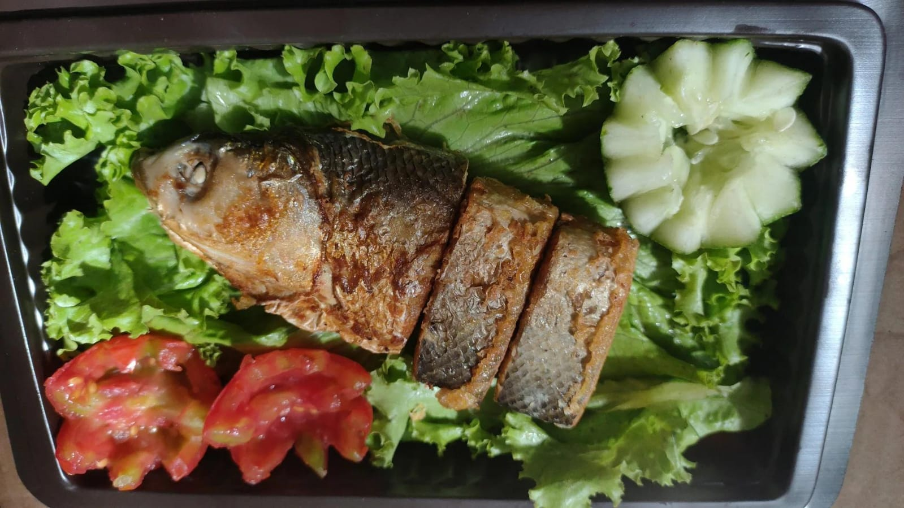

Nasi Krawu
Nasi krawu adalah makanan khas Gresik, Jawa Timur yang terdiri dari nasi putih, daging sapi, serundeng, sambal terasi,
dan mentimun.

Otak-Otak Bandeng
Otak-otak bandeng merupakan bentuk olahan yang mana daging ikan bandeng dikeluarkan tanpa merusak kulit ikan.

Nasi Krawu
Nasi krawu adalah makanan khas Gresik, Jawa Timur yang terdiri dari nasi putih, daging sapi, serundeng, sambal terasi,
dan mentimun.